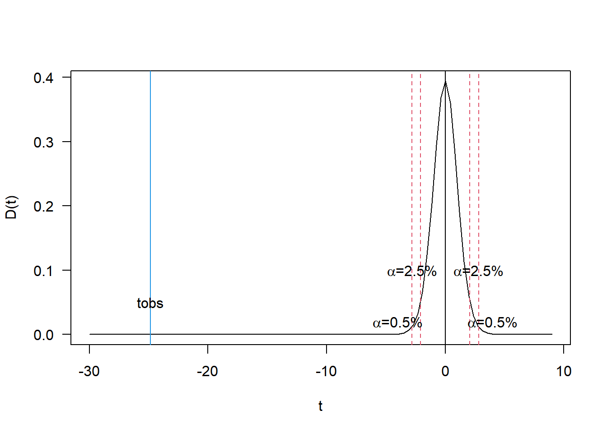

Capítulo 6 5.6 DELINEAMENTO INTEIRAMENTE CASUALIZADO COM NÚMERO DIFERENTE DE REPETIÇÕES POR TRATAMENTO
6.1 5.6.1 INTRODUÇÃO
Muitas vezes pode acontecer de chegarmos ao final do experimento e não conseguirmos obter os dados de algumas parcelas do experimento. Quando isso ocorre, dizemos que temos parcelas perdidas.
Algumas razões para a ocorrência de parcelas perdidas:
+ morte das plantas responsáveis pela parcela;
+ falha do experimentador na coleta dos dados (erro de anotação);
+ perda da ficha onde estão anotados os dados da parcela;
+ a parcela apresenta um valor muito discrepante dos demais e não é considerada para efeito de análise;
+ impossibilidade de acesso à parcela, ou ao bloco devido à condições meteorológicas;
+ falha no equipamento (muito comum na utilização de sensores).6.2 5.6.2 OBTENÇÃO DA ANÁLISE DE VARIÂNCIA
Todo o delineamento experimental é estruturado para que haja um perfeito balanceamento, e a perda de parcelas causa um quebra neste balanceamento, acarretando modificações no método de análise estatística.
Para ilustrar o procedimento de análise de um experimento inteiramente casualizado, não balanceado, vamos utilizar o exemplo seguinte, referente a dados adaptados do trabalho de CARDOSO FILHO (1974) e se referem a produção de matéria seca de cultivares de sorgo, em t/ha.
Experimento de produção de matéria seca de cultivares de sorgo, em t/ha. Para os cultivares, H = Híbrido e V = Variedade.
## Warning: package 'knitr' was built under R version 4.0.2| Cultivares | Rep.1 | Rep.2 | Rep.3 | Rep.4 | Rep.5 | Rep.6 | Totais |
|---|---|---|---|---|---|---|---|
| NK300H | 10.27 | 11.55 | 11.68 | 11.38 | 11.20 | 11.24 | 67.32 |
| Sordan67H | 9.77 | 9.96 | 11.94 | 10.18 | 10.43 | 10.49 | 62.77 |
| Pionner988H | 9.86 | 9.59 | 10.43 | 9.99 | – | – | 39.87 |
| Pionner93H | 21.22 | 20.62 | 22.33 | 19.89 | 21.00 | – | 105.06 |
| SartV | 20.20 | 20.55 | 22.12 | 20.78 | 20.90 | 20.92 | 125.47 |
| Total | 400.49 |
As hipóteses testadas são:
\[ \begin{cases} H_0: As\;cultivares\; não\; diferem\; entre\; si\; quanto\; à\; produção\; de\; matéria\; seca.\\ H_1: As\;cultivares\; diferem\; entre\; si\; quanto\; à\; produção\; de\; matéria\; seca. \end{cases} \]
a) Cálculo das Somas de Quadrados:
a.1) Cálculo da Soma de Quadrados Total:
\[ SQ_{Total} = \sum_{i=1}^I\sum_{j=i}^Jx_{ij}^2 - C \\ SQ_{Total} = \sum_{i=1}^I\sum_{j=i}^Jx_{ij}^2 - \frac{G^2}{N} \\ SQ_{Total} = (10,27^2+11,55^2+...+20,92^2) - \frac{400,49^2}{27}\\ SQ_{Total} = 710,1902 \]
a.2) Cálculo da Soma de Quadrados de Tratamentos:
Como os tratamento não são igualmente repetidos, devemos calcular a \(SQ_{trat}\) por:
\[ SQ_{Trat} =\left[ {\frac{T_1^2}{r_1}+\frac{T_2^2}{r_2}+...+\frac{T_I^2}{r_I}} \right] - \frac{G^2}{N}\\ onde,\; N=\sum_{i=1}^Ir_i\\ \]
Assim, no nosso exemplo, temos:
\[ SQ_{Trat} =\left[ {\frac{62,32^2}{6}+\frac{62,77^2}{6}+\frac{39,87^2}{4}+\frac{105,06^2}{5}+\frac{125,47^2}{6}} \right] - \frac{400,49^2}{27}\\ SQ_{Trat}= 700,2677 \]
a.2) Cálculo da Soma de Quadrados do Resíduo:
\[ SQ_{Res} = SQ_{Total} - SQ_{Trat} \\ SQ_{Res} = 710,1902 - 700,2677 \\ SQ_{Res} = 9,9225 \]
Então, podemos montar o seguinte quadro de análise de variância:
| Causas.de.Variação | GL | SQ | QM | F |
|---|---|---|---|---|
| Tratamento | 4 | 700,2677 | 175,0669 | 388,17** |
| Resíduo | 22 | 9,9225 | 0,4510 | – |
| Total | 26 | 710,1902 | – | – |
Valores de F da tabela para (4 x 22 GL):\(\begin{cases} 5\%=2,82 \\ 1\%=4,31 \end{cases}\)
Conclusão: O teste F foi significativo ao nível de 1% de probabilidade, indicando que devemos rejeitar \(H_0\) e concluir que as cultivares de sorgo possuem efeitos diferentes sobre a produção de matéria seca, com um grau de confiança de \(99\%\) de probabilidade.
Para tirar conclusões mais específicas sobre o comportamento das cultivares, devemos utilizar um teste de compração de médias.
6.3 5.6.3 CÁLCULO DAS MÉDIAS E ERROS PADRÕES DAS MÉDIAS:
A média do Tratamento \(i\) é dada por:
\[ \hat{m_i} = \frac{T_i}{r_i}, \]
e seu erro padrão, por:
\[ s(\hat{m_i})=\frac{s}{\sqrt{r_i}} = \sqrt{\frac{QM_{Resíduo}}{r_i}}. \]
Então, no nosso exemplo, temos:
\[ \hat{m_1} = \frac{T_1}{r_1}=\frac{67,32}{6}=11,22\;t/ha\\ \hat{m_2} = \frac{T_2}{r_2}=\frac{62,77}{6}=10,46\;t/ha\\ \hat{m_3} = \frac{T_3}{r_3}=\frac{39,87}{4}=9,97\;t/ha\\ \hat{m_4} = \frac{T_4}{r_4}=\frac{105,06}{5}=21,01\;t/ha\\ \hat{m_5} = \frac{T_5}{r_5}=\frac{125,47}{6}=20,91\;t/ha\\ \]
E os erros padrões dessas médias serão:
\[ s(\hat{m_1})=s(\hat{m_2})=s(\hat{m_5})=\sqrt{\frac{0,4510}{6}} = 0,27\;t/ha.\\ s(\hat{m_3})=\sqrt{\frac{0,4510}{4}} = 0,34\;t/ha.\\ s(\hat{m_4})=\sqrt{\frac{0,4510}{5}} = 0,30\;t/ha. \]
6.4 5.6.4 TESTE DE TUKEY PARA COMPARAÇÃO DAS MÉDIAS
Como os tratamentos não possuem o mesmo número de repetições, vamos ter diversos casos a considerar:
Para a aplicação do teste de Tukey, devemos colocar as médias em ordem decresecente, acompanhadas do número de repetições com que foram calculadas, ou seja
\[ \hat{m_4}=21,01 \:\:\:\:\:\: r_4=5\\ \hat{m_5}=20,91 \:\:\:\:\:\: r_5=6\\ \hat{m_1}=11,22 \:\:\:\:\:\: r_1=6\\ \hat{m_2}=10,46 \:\:\:\:\:\: r_2=6\\ \hat{m_3}=9,97 \:\:\:\:\:\:\:\: r_3=4\\ \]
a. Comparação entre médias com 6 repetições entre si:
Neste caso, como as médias são igualmente repetidas, a dms é dada por:
\[ q_{(5\times 22\;GLres)} = 4,20,\;então \\ \Delta=q\cdot\sqrt{\frac{0,4510}{6}}=1,13\;t/ha \]
Os contrastes que envolvem comparações são:
\[ \hat{Y_1} = \hat{m_5} - \hat{m_1} = 9,69^*\;t/ha \\ \hat{Y_2} = \hat{m_5} - \hat{m_2} = 10,45^*\;t/ha \\ \hat{Y_3} = \hat{m_1} - \hat{m_2} = 0,76^{ns}\;t/ha \]
b. Comparação entre médias com 6 repetições com média com 5 repetições:
Neste caso, a dms será calculada por:
\[ \Delta = q\cdot\sqrt{\frac{1}{2}\hat{V(\hat{Y})}}, onde\;\\ \hat{V(\hat{Y})}= \left( \frac{1}{6}+\frac{1}{5} \right)\cdot0,4510 = 0,1654 \]
Portanto:
\[ \Delta = 4.20\cdot\sqrt{\frac{1}{2}\cdot0,1654} = 1,21\;t/ha \]
Os contrastes que envolvem comparações são:
\[ \hat{Y_4} = \hat{m_4} - \hat{m_1} = 9,79^*\;t/ha \\ \hat{Y_5} = \hat{m_4} - \hat{m_2} = 10,55^*\;t/ha \\ \hat{Y_6} = \hat{m_4} - \hat{m_5} = 0,10^{ns}\;t/ha \]
c. Comparação entre médias com 6 repetições com média com 4 repetições:
Neste caso, a dms será calculada por:
\[ \Delta = q\cdot\sqrt{\frac{1}{2}\hat{V(\hat{Y})}}, onde\;\\ \hat{V(\hat{Y})}= \left( \frac{1}{6}+\frac{1}{4} \right)\cdot0,4510 = 0,1879 \]
Portanto:
\[ \Delta = 4.20\cdot\sqrt{\frac{1}{2}\cdot0,1879} = 1,29\;t/ha \] Os contrastes que envolve comparações são:
\[ \hat{Y_7} = \hat{m_1} - \hat{m_3} = 1,25^{ns}\;t/ha \\ \hat{Y_8} = \hat{m_2} - \hat{m_3} = 0,49^{ns}\;t/ha \\ \hat{Y_9} = \hat{m_5} - \hat{m_3} = 10,94^{*}\;t/ha \] d. Comparação entre médias com 5 repetições com média com 4 repetições:
Neste caso, a dms será calculada por:
\[ \Delta = q\cdot\sqrt{\frac{1}{2}\hat{V(\hat{Y})}}, onde \\ \hat{V(\hat{Y})}= \left( \frac{1}{5}+\frac{1}{4} \right)\cdot0,4510 = 0,2030 \]
Portanto:
\[ \Delta = 4.20\cdot\sqrt{\frac{1}{2}\cdot0,2030} = 1,34\;t/ha \]
O contraste que envolvem comparação é:
\[ \hat{Y_{10}} = \hat{m_4} - \hat{m_3} = 11,04^{*}\;t/ha \]
Podemos agora montar um quadro com todos os contrastes:
| \(\hat{m_5}\) | \(\hat{m_1}\) | \(\hat{m_2}\) | \(\hat{m_3}\) | ||
|---|---|---|---|---|---|
| \(\hat{m_4}\) | \(0,10^{ns}\) | \(9,79^{*}\) | \(10,55^{*}\) | \(11,04^{*}\) | |
| \(\hat{m_5}\) | \(9,69^{*}\) | \(10,45^{*}\) | \(10,94^{*}\) | ||
| \(\hat{m_1}\) | \(0,76^{ns}\) | \(1,25^{ns}\) | |||
| \(\hat{m_2}\) | \(0,49^{ns}\) |
\[ \hat{m_4}=21,01 \:\:\:\:\:\: a\\ \hat{m_5}=20,91 \:\:\:\:\:\: a\\ \hat{m_1}=11,22 \:\:\:\:\:\: b\\ \hat{m_2}=10,46 \:\:\:\:\:\: b\\ \hat{m_3}=9,97 \:\:\:\:\:\:\:\:b \]
Resumo dos resultados obtidos no Teste de Tukey:
| Cultivares | Médias | Tukey | Erros padrões |
|---|---|---|---|
| NK300H | 11.22 | b | 0.27 |
| Sordan67H | 10.46 | b | 0.27 |
| Pionner988H | 9.97 | b | 0.34 |
| Pionner93H | 21.01 | a | 0.30 |
| SartV | 20.91 | a | 0.27 |
6.5 5.6.5 CÁLCULO DO COEFICIENTE DE VARIAÇÃO DO EXPERIMENTO
\[ \hat{m} = \frac{G}{N} = \frac{400,49}{27} = 14,82\;t/ha \\ s = \sqrt{QM_{Res}}=\sqrt{0,4510}=0,6716\;t/ha\\ \]
Portanto: \[ CV=100\cdot \frac{s}{\hat{m}} = 100\cdot \frac{0,6716}{14,83}=4,53\% \]
Utilizando o R para obtermos o quadro da análise de variância, os dados estão disponíveis online em: sorgo.

# Carregando o pacote para a análise
library(ExpDes.pt)
# Caminho dos dados
caminho<-"https://raw.githubusercontent.com/arpanosso/ExpAgr_2020/master/dados/sorgo.txt"
# Lendo o arquivo de dados
dados<-read.table(caminho,h=T,sep="\t")
# verificando os 6 primeiros registros
head(dados)## Trat Y
## 1 NK300H 10.27
## 2 Sordan67H 9.77
## 3 Pionner988H 9.86
## 4 Pionner93H 21.22
## 5 SartV 20.20
## 6 NK300H 11.55# Análise de variância e teste de Tukey com a função dic
trat <- dados$Trat[!is.na(dados$Y)] # Criando o vetor de tratamentos sem os valores perdidos
massa_seca <- dados$Y[!is.na(dados$Y)] # Criando o vetor com a variável resposta semos valores perdidos
# Utilizando a função
dic(trat,massa_seca,mcomp = "tukey", sigT = .01)## ------------------------------------------------------------------------
## Quadro da analise de variancia
## ------------------------------------------------------------------------
## GL SQ QM Fc Pr>Fc
## Tratamento 4 700.27 3 388.15 4.6914e-20
## Residuo 22 9.92 2
## Total 26 710.19 1
## ------------------------------------------------------------------------
## CV = 4.53 %
##
## ------------------------------------------------------------------------
## Teste de normalidade dos residuos
## Valor-p: 0.05636895
## De acordo com o teste de Shapiro-Wilk a 5% de significancia, os residuos podem ser considerados normais.
## ------------------------------------------------------------------------
##
## ------------------------------------------------------------------------
## Teste de homogeneidade de variancia
## valor-p: 0.9943713
## De acordo com o teste de bartlett a 5% de significancia, as variancias podem ser consideradas homogeneas.
## ------------------------------------------------------------------------
##
## Teste de Tukey
## ------------------------------------------------------------------------
## Grupos Tratamentos Medias
## a Pionner93H 21.012
## a SartV 20.91167
## b NK300H 11.22
## b Sordan67H 10.46167
## b Pionner988H 9.9675
## ------------------------------------------------------------------------6.6 5.6.6 APLICAÇÃO DO TESTE t DE STUDENT A UM CONTRASTE
Para exemplificar, vamos estudar o seguinte contraste:
\[ Y=m_1+m_2+m_3+m_4-4m_5 \]
que permite testar se a média dos híbridos difere da média da variedade. Neste caso, as hipóteses a serem restada serão:
\[ \begin{cases} H_0:\frac{m_1+m_2+m_3+m_4}{4}=m_5 \\ H_1: \frac{m_1+m_2+m_3+m_4}{4} \neq m_5 \end{cases} \]
A estimativa do contraste será: \[ \hat{Y} = \hat{m_1}+\hat{m_2}+\hat{m_3}+\hat{m_4}-4\hat{m_5} \\ \hat{Y} = 11,22+10,46+9,97+21,01-4\cdot20,91 \\ \hat{Y} = -30,98 \]
A estimativa da variância do contraste será:
\[ \hat{V}(\hat{Y}) = \left(\frac{c_1^2}{r_1}+\frac{c_2^2}{r_2}+...+\frac{c_I^2}{r_I} \right)s^2 \\ \hat{V}(\hat{Y}) = \left(\frac{1^2}{6}+\frac{1^2}{6}+\frac{1^2}{4}+\frac{1^2}{5}+\frac{(-4)^2}{6} \right)0,4510^2 \\ \hat{V}(\hat{Y}) = 1,5560 \]
Assim, o erro padrão do contraste será:
\[ s(\hat{Y})=\sqrt{\hat{V}(\hat{Y})} = \sqrt{1,5560}=1,25 \]
e o valor da estatística do teste t será:
\[ t_{obs} = \frac{\hat{Y}}{s(\hat{Y})}=\frac{-30,98}{1.25}=-24,78^{**} \\ t_{tab (22 GLres)} \begin{cases}5\%=2,07\\1\%=2,82 \end{cases} \]
Conclusão: Como \(t_{obs} > t_{tab}\), rejeitamos \(H_0\) e concluímos que a média do grupo de híbridos diferem da média da variedade SART, sendo que, em médias, a variedade possui maior produção de matéria seca que os híbridos.
require(agricolae)
m <- tapply(massa_seca,trat,mean,na.rm=TRUE)
r <- tapply(massa_seca,trat, .nac<-function(x) {x<-na.omit(x);length(x)})
QMRes <- 0.4510
glRes <- 22
#Híbridos vs Variedades
m## NK300H Pionner93H Pionner988H SartV Sordan67H
## 11.22000 21.01200 9.96750 20.91167 10.46167## [1] -30.9855## [1] -24.84052## [1] 2.073873## [1] 2.818756# Construção do Gráfico para interpretação
curve(dt(x,glRes),-30,9,xlab="t",ylab="D(t)",las=1)
abline(v=0)
abline(v=c(tc5,-tc5,tc1,-tc1),col=2,lty=2)
abline(v=tobs,col=4,lty=1)
text(2.8,.1,expression(paste(alpha,"=2.5%")))
text(4,.02,expression(paste(alpha,"=0.5%")))
text(-2.8,.1,expression(paste(alpha,"=2.5%")))
text(-4,.02,expression(paste(alpha,"=0.5%")))
text(tobs,.05,"tobs")
6.7 5.6.7 TESTE DE DUNCAN PARA A COMPARAÇÃO DAS MÉDIAS
Para a aplicação do teste de Duncan, devemos colocar as médias em ordem decresecente, acompanhadas do número de repetições com que foram calculadas, ou seja
\[ \hat{m_4}=21,01 \:\:\:\:\:\: r_4=5\\ \hat{m_5}=20,91 \:\:\:\:\:\: r_5=6\\ \hat{m_1}=11,22 \:\:\:\:\:\: r_1=6\\ \hat{m_2}=10,46 \:\:\:\:\:\: r_2=6\\ \hat{m_3}=9,97 \:\:\:\:\:\:\:\: r_3=4\\ \]
Amplitude total estudentizada (z), encontradas na tabela para uso no teste de Duncan, ao nível de 5% de significância.
| n´ / n | 2 | 3 | 4 | 5 |
|---|---|---|---|---|
| 22 | 2.93 | 3.08 | 3.17 | 3.24 |
a) Contrastes que abrangem 5 médias:
\[ \hat{Y_1}=\hat{m_4}-\hat{m_3} = 21,01-9,97 = 11,04\;t/ha \\ \hat{V}(\hat{Y_1})= \left( \frac{1}{r_4} + \frac{1}{r_3}\right)s^2 = \left( \frac{1}{5} + \frac{1}{4}\right)0,4510 = 0,2030\\ D_5 = z_\alpha \sqrt{\frac{1}{2}\hat{V}(\hat{Y})}= 3,24\sqrt{\frac{1}{2}\cdot0,2030} = 1,03\; t/ha \]
Como \(\hat{Y_1} > D_5'\), rejeita-se \(H_0\), o contraste é significativo, indicando que \(\hat{m_4}\) difere de \(\hat{m_3}\).
b) Contrastes que abrangem 4 médias:
\[ \begin{cases} \hat{Y_2}=\hat{m_4}-\hat{m_2} = 21,01-10,46 = 10,55\;t/ha \\ \hat{Y_3}=\hat{m_5}-\hat{m_3} = 20,91-9,97 = 10,94\;t/ha \end{cases} \\ \hat{V}(\hat{Y_2})= \left( \frac{1}{r_4} + \frac{1}{r_2}\right)s^2 = \left( \frac{1}{5} + \frac{1}{6}\right)0,4510 = 0,1654\\ D_4' = z_\alpha \sqrt{\frac{1}{2}\hat{V}(\hat{Y_2})}= 3,17\sqrt{\frac{1}{2}\cdot0,1654} = 0,91\; t/ha \\ \] Como \(\hat{Y_2} > D_4'\), rejeita-se \(H_0\), o contraste é significativo, indicando que \(\hat{m_4}\) difere de \(\hat{m_2}\).
\[ \hat{V}(\hat{Y_3})= \left( \frac{1}{r_5} + \frac{1}{r_3}\right)s^2 = \left( \frac{1}{6} + \frac{1}{4}\right)0,4510 = 0,1879\\ D'_4 = z_\alpha \sqrt{\frac{1}{2}\hat{V}(\hat{Y_3})}= 3,17\sqrt{\frac{1}{2}\cdot0,1879} = 0,97\; t/ha \\ \] Como \(\hat{Y_3} > D''_4\), rejeita-se \(H_0\), o contraste é significativo, indicando que \(\hat{m_5}\) difere de \(\hat{m_3}\).
c) Contrastes que abrangem 3 médias:
\[ \begin{cases} \hat{Y_4}=\hat{m_4}-\hat{m_1} = 21,01-11,22 = 9,79\;t/ha \\ \hat{Y_5}=\hat{m_5}-\hat{m_2} = 20,91-10,46 = 10,45\;t/ha \\ \hat{Y_6}=\hat{m_4}-\hat{m_1} = 11,22-9,97 = 1,25\;t/ha \end{cases} \\ \hat{V}(\hat{Y_4})= \left( \frac{1}{r_4} + \frac{1}{r_1}\right)s^2 = \left( \frac{1}{5} + \frac{1}{6}\right)0,4510 = 0,1654\\ D'_3 = z_\alpha \sqrt{\frac{1}{2}\hat{V}(\hat{Y_4})}= 3,08\sqrt{\frac{1}{2}\cdot0,1654} = 0,89\; t/ha \\ \] Como \(\hat{Y_4} > D'_3\), rejeita-se \(H_0\), o contraste é significativo, indicando que \(\hat{m_4}\) difere de \(\hat{m_1}\).
\[ D_3 = z_\alpha \sqrt{\frac{QM_{Res}}{r}} = 3,08 \sqrt{\frac{0,4510}{6}} = 0,84\; t/ha \] Como \(\hat{Y_5} > D_3\), rejeita-se \(H_0\), o contraste é significativo, indicando que \(\hat{m_5}\) difere de \(\hat{m_2}\).
\[ \hat{V}(\hat{Y_6})= \left( \frac{1}{r_1} + \frac{1}{r_3}\right)s^2 = \left( \frac{1}{6} + \frac{1}{4}\right)0,4510 = 0,1879\\ D''_3 = z_\alpha \sqrt{\frac{1}{2}\hat{V}(\hat{Y_C})}= 3,08\sqrt{\frac{1}{2}\cdot0,1879} = 0,94\; t/ha \\ \] Como \(\hat{Y_6} > D''_3\), rejeita-se \(H_0\), o contraste é significativo, indicando que \(\hat{m_1}\) difere de \(\hat{m_3}\).
d) Contrastes que abrangem 2 médias:
\[ \begin{cases} \hat{Y_7}=\hat{m_4}-\hat{m_5} = 21,01-20,91 = 0,10\;t/ha \\ \hat{Y_8}=\hat{m_5}-\hat{m_1} = 20,91-11,22 = 9,69\;t/ha \\ \hat{Y_9}=\hat{m_1}-\hat{m_2} = 11,22-10,46 = 0,76\;t/ha \\ \hat{Y_{10}}=\hat{m_2}-\hat{m_3} = 10,46-9,97 = 0,49\;t/ha \end{cases} \\ \hat{V}(\hat{Y_7})= \left( \frac{1}{r_4} + \frac{1}{r_5}\right)s^2 = \left( \frac{1}{5} + \frac{1}{6}\right)0,4510 = 0,1654\\ D_2' = z_\alpha \sqrt{\frac{1}{2}\hat{V}(\hat{Y_7})}= 2,93\sqrt{\frac{1}{2}\cdot0,1654} = 0,84\; t/ha \\ \] Como \(\hat{Y_7} < D'_2\), não rejeita-se \(H_0\), o contraste não é significativo, indicando que \(\hat{m_4}\) não difere de \(\hat{m_5}\). As médias devem ser unidas por uma barra.
\[ D_2 = z_\alpha \sqrt{\frac{QM_{Res}}{r}} = 2,93 \sqrt{\frac{0,4510}{6}} = 0,80\; t/ha \] Como \(\hat{Y_8} > D_2\), rejeita-se \(H_0\), o contraste é significativo, indicando que \(\hat{m_5}\) difere de \(\hat{m_1}\).
Como \(\hat{Y_9} < D_2\), não rejeita-se \(H_0\), o contraste não é significativo, indicando que \(\hat{m_1}\) não difere de \(\hat{m_2}\). As médias devem ser unidas por uma barra.
\[ \hat{V}(\hat{Y_{10}})= \left( \frac{1}{r_2} + \frac{1}{r_3}\right)s^2 = \left( \frac{1}{6} + \frac{1}{4}\right)0,4510 = 0,1879\\ D''_2 = z_\alpha \sqrt{\frac{1}{2}\hat{V}(\hat{Y_{10}})}= 2,93\sqrt{\frac{1}{2}\cdot0,1879} = 0,90\; t/ha \\ \] Como \(\hat{Y_{10}} < D''_2\), não rejeita-se \(H_0\), o contraste é não significativo, indicando que \(\hat{m_2}\) não difere de \(\hat{m_3}\). As médias devem ser unidas por uma barra.
| Cultivares | Médias |
|---|---|
| Pionner93H | 21.01 a |
| SartV | 20.91 a |
| NK300H | 11.22 b |
| Sordan67H | 10.46 bc |
| Pionner988H | 9.97 c |
6.7.1 Utilizando o R
# Carregando o pacote para a análise
library(ExpDes.pt)
# Caminho dos dados
caminho<-"https://raw.githubusercontent.com/arpanosso/ExpAgr_2020/master/dados/sorgo.txt"
# Lendo o arquivo de dados
dados<-read.table(caminho,h=T,sep="\t")
# verificando os 6 primeiros registros
head(dados)## Trat Y
## 1 NK300H 10.27
## 2 Sordan67H 9.77
## 3 Pionner988H 9.86
## 4 Pionner93H 21.22
## 5 SartV 20.20
## 6 NK300H 11.55# Análise de variância e teste de Tukey com a função dic
trat <- dados$Trat[!is.na(dados$Y)] # Criando o vetor de tratamentos sem os valores perdidos
massa_seca <- dados$Y[!is.na(dados$Y)] # Criando o vetor com a variável resposta semos valores perdidos
# Utilizando a função
dic(trat,massa_seca,mcomp = "duncan", sigT = .01)## ------------------------------------------------------------------------
## Quadro da analise de variancia
## ------------------------------------------------------------------------
## GL SQ QM Fc Pr>Fc
## Tratamento 4 700.27 3 388.15 4.6914e-20
## Residuo 22 9.92 2
## Total 26 710.19 1
## ------------------------------------------------------------------------
## CV = 4.53 %
##
## ------------------------------------------------------------------------
## Teste de normalidade dos residuos
## Valor-p: 0.05636895
## De acordo com o teste de Shapiro-Wilk a 5% de significancia, os residuos podem ser considerados normais.
## ------------------------------------------------------------------------
##
## ------------------------------------------------------------------------
## Teste de homogeneidade de variancia
## valor-p: 0.9943713
## De acordo com o teste de bartlett a 5% de significancia, as variancias podem ser consideradas homogeneas.
## ------------------------------------------------------------------------
##
## Teste de Duncan
## ------------------------------------------------------------------------
## Grupos Tratamentos Medias
## a Pionner93H 21.012
## a SartV 20.91167
## b NK300H 11.22
## bc Sordan67H 10.46167
## c Pionner988H 9.9675
## ------------------------------------------------------------------------